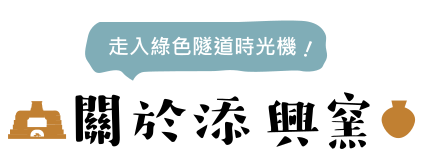

提供一個完善之作陶空間與簡易的技巧指導，讓您盡情享受親手作陶的樂趣。
蛇窯沿自於大陸福州，被燒陶人採用超過300年以上，是近代製陶業普遍採用的窯種，由於窯身瘦長，昔日此類官窯稱為【龍窯】，民窯則稱【蛇窯】。
添興窯於1955年創窯時，即建立第一座蛇窯，921大地震，遭受嚴重的損傷，終於在2000年8月3日修復完成，現已成為台灣地區現存仍實際燒窯的老蛇窯，繼續擔負延續台灣陶藝傳統的使命。
集集蛇窯小檔案
．窯室身長75台尺，窯頭長20台尺，總長95台尺，身高12台尺，煙囪高20台尺。
．按15度斜坡建築， 共有窯門3個，左右窯窗各25個〈共50個〉，窯頭柴灶孔2個及通氣孔1個。
．每年燒窯三到六次外，可供遊客走入窯中欣賞內部多年燒窯的痕跡，及緬懷先民燒
陶之辛苦，宛如走入時空隧道 。
由於目前需用以蛇窯燒的陶藝品不多，故每窯僅燒約全窯容積的三分之一，其他三分之二容積必須維持空燒，成本雖高但是為了維持老蛇窯的長壽，仍是值得。
(註：一般窯爐若長久不燒窯容易風化塌陷 。)
-
創立於今集集綠色隧道旁，早期生產大水缸、酒甕、琉璃瓦及民生用粗陶等聞名全台。
-
因應台灣陶瓷生態逐漸轉型為「陶藝」結合「體驗」的創意文化窯場，並致力於陶藝推廣及傳承，以「生活陶藝化‧陶藝生活化」為發展主軸，多年來不斷創新、開發各種陶瓷產品。
-
獨家與工研院合作開發的「竹碳陶」技術已成為普受肯定的「文化結合科技」台灣原生文創產品。
-
獲登錄為南投縣文化資產歷史建築類別。
-
推出醞釀一甲子採用天然環保原物料的「璞真燒」系列
-
打造全新「樟香」質感系列，以綠色隧道的老樟樹外型發想，天然泥質釉呈現渾然天成的手藝質感。